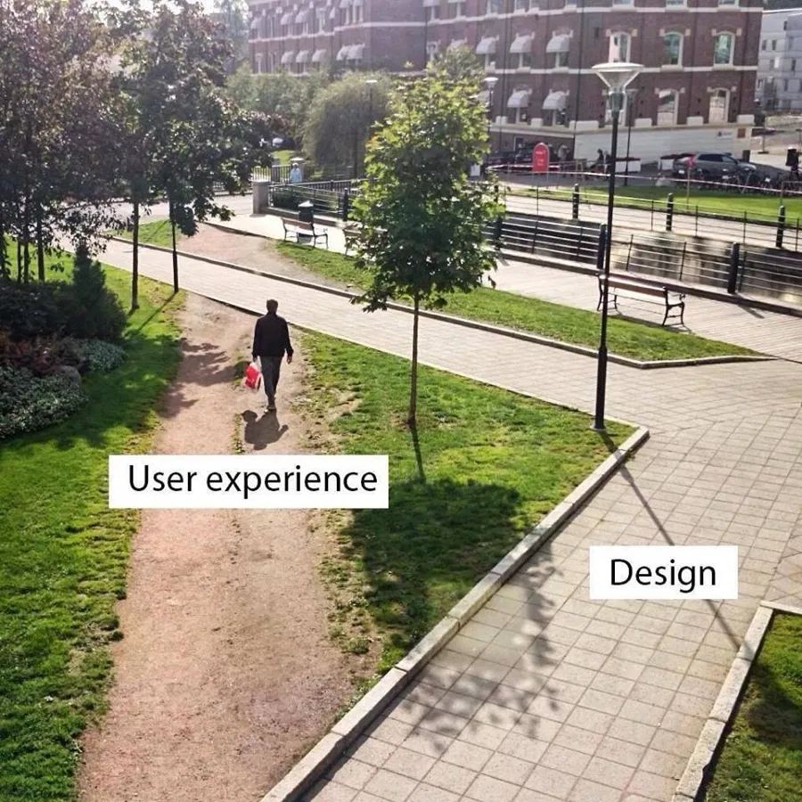

The Worn Path
Finding product opportunity in the gap between designed and observed journeys
Every product ships with an implicit assumption about how users will move through it. Real users routinely deviate from those assumptions, often in ways product teams don't notice until the divergence becomes significant. The gap between the designed workflow and the actual behaviour is where product opportunity lives.
What the framework is
Named after desire paths — the dirt tracks people wear across grass instead of using the paved walkway. In physical design it's an old idea. Some design schools now deliberately lay grass first, wait a few months, and pave over the tracks people choose — the theory being that users often reveal routes designers didn't anticipate.
The Worn Path framework applies the same principle to digital products. Users write their own routes through your product. Those routes are visible in behavioural data if you look for them. Finding them, and understanding why they exist, is a generative act — it often produces the strongest product opportunities.

A desire path in the wild. The label pair — user experience on the dirt track, design on the paved walkway — makes the product point instantly.
What qualifies as a worn path
A genuine worn path has three characteristics: it's repeated across a meaningful population, it persists over time, and it points to a structural gap in the designed journey. One user's shortcut is an anecdote. A pattern that meets all three is a signal.
Why they matter
Behaviour is often the stronger signal of current constraints. Stated preferences (in surveys, in interviews) reflect what users think they want, or what they think they should say. Observed behaviour reflects what they actually do under current constraints. Both need interpreting — but when the two diverge, behaviour is usually the more honest signal of the constraint the user is trying to work around.
Worn paths reveal structural gaps, not situational ones. A worn path usually exists because the designed path doesn't fully serve the job users are trying to accomplish. It's not one user's mistake — it's a pattern across many users, pointing to a gap in the design rather than in the users' behaviour.
The fix generalises. When you understand why users take the worn path, you can either pave it (build the workaround into the product) or remove the reason it existed (fix the design gap that forced the workaround). Both are more valuable than making the paved path prettier.
How you find them
Worn paths don't announce themselves. They show up as anomalies in behavioural data. Four analytical techniques do most of the detection.
1. Event-sequence analysis with a time window
What it does: examines what users do immediately before and after a key event, within a defined time window.
When it's useful: when a behaviour appears to be triggered upstream or resolved downstream in ways the product didn't design for.
2. Co-occurrence and association analysis
What it does: looks for pairs or clusters of behaviours that happen together more often than random.
When it's useful: identifying which existing behaviours are actually part of the same underlying job, even if the product treats them as separate.
3. Behavioural segmentation by path
What it does: clusters users by the actual sequence of steps they take, then identifies populations whose behaviour concentrates in specific segments.
When it's useful: when a signal seems weak in aggregate but strong in a subset — the "3% of users do X" pattern that turns out to be "43% of a specific cohort do X."
4. Statistical validation
What it does: tests whether a behavioural pattern is likely to be meaningful rather than random — chi-square, lift tests, or significance checks against a control cohort. The specific tool matters less than the discipline of running one.
When it's useful: when the pattern needs to withstand skeptical questioning, or when the intervention it implies is expensive.
The decision rule
When a repeated, high-intent workaround appears in a meaningful cohort, investigate the underlying job before optimising the existing screen. Prioritise the systemic fix when the same unmet need leaks into multiple channels or journeys.
A worked example
At a large Indian non-bank lender, a small anomaly turned into a strategic recommendation.
The pattern. Around 5% of customers who downloaded their Statement of Account went to in-app search within two minutes and typed variations of "kisht kitna hai" — Hindi for "how much is my installment?" The installment amount was already on the statement they had just downloaded, in English.
The technique. Event-sequence analysis with a two-minute time window on the SoA-download event, cross-referenced against subsequent search-term patterns. Behavioural segmentation by navigation flow revealed that the anomaly concentrated sharply in the flows where the vernacular-language toggle wasn't easily available.
The interpretation. Users wanted their installment amount in a language they could parse. The Statement of Account displayed it in English. When customers couldn't find the vernacular toggle in the flow they were already in, they fell back to in-app search — typing the question in Hindi. Search was the visible workaround for a design gap that existed elsewhere.
The cross-channel escalation. This was the more important move. Search was one leak. The same underlying problem — customers unable to answer a basic loan question in the language they think in — was also leaking into support tickets, chat conversations, and branch walk-ins. We didn't see those channels in the search data. Fixing only the vernacular toggle would close one visible leak while leaving the structural gap.
TACTICAL FIX
Standardise the vernacular toggle across all navigation flows.
Shipped in a week. Closed the specific leak; the search pattern faded from ~5% to under 1% and stayed under control on monthly service-health reviews.
SYSTEMIC OPPORTUNITY
Make self-service understandable in the customer's language across the platform.
Shaped a roadmap. Accelerated vernacular support across surfaces and prompted investment in real-time assistance for exactly these self-help moments.
The specific search behaviour declined sharply after the fix. Any broader cost-to-serve impact wasn't isolated cleanly enough to attribute causally. The strategic vernacular investment that followed was where the material downstream impact would land, on a longer horizon than a single ship.
How this differs from the Hierarchy of Product Needs
The two frameworks answer different questions.
The Hierarchy is diagnostic. Something has already gone wrong; you're trying to figure out which layer (utility, usability, experience) the failure lives in, so intervention is chosen against the right problem.
The Worn Path is generative. Nothing may be visibly "wrong" — the product may be functioning as designed. You're looking for the gap between designed workflow and actual behaviour to find what the product could be doing that it isn't.
On a real product problem, you often use them in sequence: worn-path analysis to identify what's happening, hierarchy analysis to diagnose the layer at which the intervention should live.
The limits
The worn path only tells you what users are doing, not why. A pattern in the data is a hypothesis, not an answer. You still need qualitative work — interviews, observation, session recordings — to understand the reason behind the behaviour. Skipping that step is how teams ship confident fixes for problems they misunderstood.
Also: not every anomaly is a worn path. Some are edge cases. Some are bugs. Some are one power user doing something weird that shouldn't inform the product for the other 99%. Distinguishing a genuine pattern (many users, persistent behaviour, structural cause) from noise (few users, transient, situational) is judgment work that no technique substitutes for.
Where it shows up in my case studies
The search audit is a worn-path finding at platform level. The 247-keyword audit revealed the paved path (the search bar) was serving one half of the user base well (product discovery) and structurally underserving the other half (order and account servicing). The pattern was in the data; the framework named what it meant.
The PDP disclosure experiment used a worn-path finding as its origin. The CIBIL cross-reference revealed that drop-offs weren't giving up on borrowing — they were borrowing elsewhere. The paved path assumed drop-off meant disinterest. The worn path was: interested customer, cognitive overload, competitor's simpler flow. Reframing the page was the response.